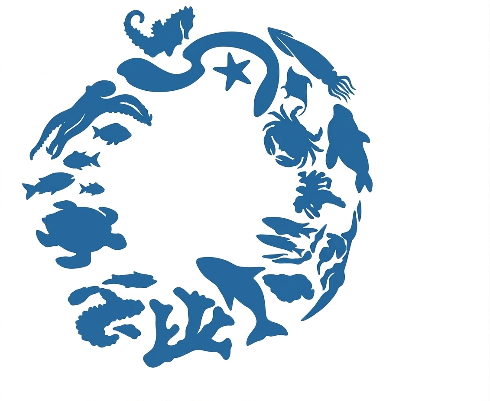

We have seen a lot of trash on the beaches here in Málaga, and that affects especially wildlife. Every piece of plastic that reaches the sea puts a living creature at risk — and ultimately, it comes back to us too.
Our oceans face a triple threat from human activity. Each problem amplifies the others — together they are devastating.
Solid waste takes hundreds of years to decompose. Marine species confuse it with food, ingesting toxins that accumulate up the food chain.
Toxic substances introduce excessive nutrients into the water, generating harmful algae blooms that deplete oxygen — making survival impossible for marine animals.
Abandoned ghost nets left by fishermen continue trapping and killing animals indiscriminately, contributing to the collapse of fish populations.
Our organisation creates volunteer-powered activities that make a measurable, positive change on the coastline and in the ocean.
Teams compete to collect plastics, microplastics and rubbish from the sand and coast. Afterwards, the teams classify and recycle everything collected.
The workshop programme teaches volunteers about pollution and the toxic substances affecting marine wildlife — turning awareness into lasting change.
Volunteer divers go underwater to remove ghost nets and dangerous fishing materials that trap and harm marine animals — a direct intervention where it counts most.
We must be aware that every action has a consequence. The overuse of plastic and chemical spills not only ruins our experience at the beach — they are deeply harmful to marine species.
Let's make better use of plastic and care more about our fauna! 🐢